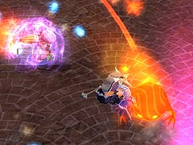

目次 > ゲームについて > 日本Falcom 攻略 > ZWEI II > G-コロッセオ > 魔法少女杯
らんの眼
ZWEI II (ツヴァイ 2、ZWEI II Plus)
| 概要 | 情報 | 攻略チャート |
| フード交換 | ペットについて | ボス戦 |
| 敵キャラ一覧 | ハンターランク | G-コロッセオ |
| アイテム一覧 | ガジェット一覧 | トレジャー一覧 |
| ダンジョン一覧 | クリアデータ特典 | Plusの追加要素 |
| ZWEI II攻略へ | 目次へ戻る |
| ピピロ 前半 |
| 前作は大変お世話になったピピロの魔法ですが、「ZWEI II」でもその威力は健在です。 前半のピピロは直線上に飛ぶ魔法と衝撃波しか使ってきません。 ラグナの場合は、攻撃と攻撃の間の隙を突いて攻撃してください。 衝撃波はピピロとの距離が近いときにしか使ってこないので、アルウェンの場合は、遠距離から魔法を撃っているだけで体力を削ることができます。 |
| ピピロ 中盤 |
| 中盤に入る前にピピロがいったん転位魔法を使い、ワープします。ワープでの出現と同時に魔法を撃ってくるので、不意打ちに備えてください。 中盤では、前半で使っていた魔法に加え、追尾してくる魔法を撃つようになります。弾のスピードは遅いので簡単によけられますが、ラグナの場合は攻撃がしづらくなります。 さらに、「いくわよー」の言葉と共に大量の魔法弾を螺旋状に撃ってきます。これは至近距離では非常によけにくいので、遠くに離れてよけた方が安全です。 |
| ピピロ 後半 |
| 後半になると、ピピロの周りにバリアーが作られ、アルウェンの魔法を全て跳ね返します。  魔法を跳ね返してはいますが、ダメージは受けるようなので、「焦熱の魔法」のような食らうと怖い魔法は使わない方が無難です。 また、常時四方に魔法をうち続けるようになり、近づきにくくなります。 さらに、前半・中盤で使っていた技に加え、魔法の使い方のバリエーションが増え、魔法を使う間隔も短くなります。そのため、ラグナの場合はレベルが低いと非常に苦戦します。ピピロの攻撃の隙を突いて、アンカーギアが届くぎりぎりの距離でチクリと当てるか、ダメージ覚悟で懐に飛び込むしかないです。 アルウェンの場合は、「無垢の魔法」や「極光の魔法」などで攻撃するといいでしょう。 |
| 概要 | 情報 | 攻略チャート |
| フード交換 | ペットについて | ボス戦 |
| 敵キャラ一覧 | ハンターランク | G-コロッセオ |
| アイテム一覧 | ガジェット一覧 | トレジャー一覧 |
| ダンジョン一覧 | クリアデータ特典 | Plusの追加要素 |
| ページの上部へ | ZWEI II 攻略へ | 目次へ戻る |